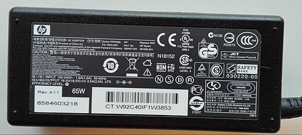

International Plug and Socket Guide
What kind of travel adapter will you need when travelling internationally? Use this simple power adapter guide to help you understand what type of plug, adapter, or converter to use on your next trip.
Plug & Socket Types
There are twelve different types of power plugs and corresponding sockets used around the world. Why are there so many different standards? The simple answer is that international travel was not nearly as common when electricity came of age as it is today. The designers of the early electrical grid were not working together on how to make a lamp in the UK compatible with sockets in the US and the idea of portable electronic devices was still many decades away.
The most common plug types most travellers need to be familar with are Type A, C, F, and N. The good news is that many travel adapters today include the correct plug for multiple countries. Check what type of travel adapter need for the country you're visiting.
It's important to remember that the plug and socket type is only half of the equation when using power abroad. Many devices will require a different voltage standard as well...
Voltage & Converters

In general, there are two voltage standards used around the world; approximately 120V and approximately 220V. These two voltage standards are not compatible! In the United States 120V is the standard and all electronics intended for use in the United States are designed to operate at 120V. In most European and many other countries the standard voltage is approximately double the voltage used in the US, 220V.
It's important to check both plug type and voltage type before travelling to a new country. If the country you are visiting has a different voltage standard from your home you may need to use a converter (or a transformer). A travel converter will convert the voltage from the wall socket to your device. This process is called stepping up or stepping down the voltage based on your needs. Serious injury can occur if you attempt to use a travel adapter without the appropriate voltage setting. However, many devices today have been designed to be compatible with a wide range of voltages and may not require a converter at all.
⚠️ Safety Tip: Always check the standard voltage in your destination country, use a converter if necessary!
Smartphones, Laptops and Appliances

Today, most smartphones, laptops, and digital cameras work with voltage levels from 100-230V. To